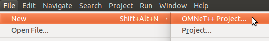
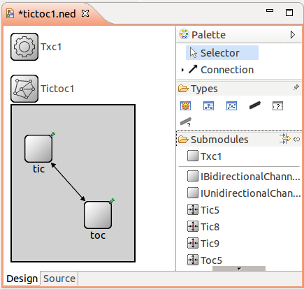
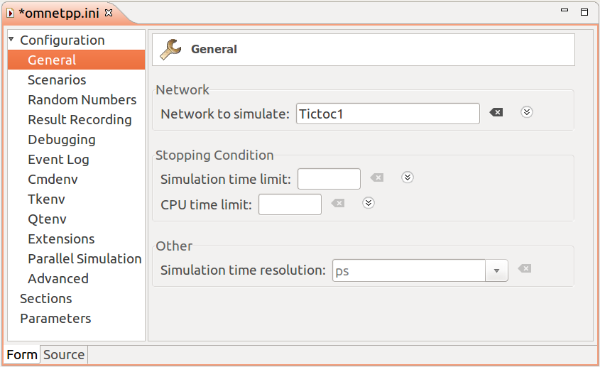

Part 1 - Getting Started¶
1.1 The model¶
For a start, let us begin with a "network" that consists of two nodes.
The nodes will do something simple: one of the nodes will create a packet,
and the two nodes will keep passing the same packet back and forth.
We'll call the nodes tic and toc. Later we'll gradually
improve this model, introducing OMNeT++ features at each step.
Here are the steps you take to implement your first simulation from scratch.
1.2 Setting up the project¶
Start the OMNeT++ IDE by typing omnetpp in your terminal. (We assume
that you already have a working OMNeT++ installation. If not, please install the latest
version, consulting the Installation Guide as needed.)
Once in the IDE, choose New -> OMNeT++ Project from the menu.

A wizard dialog will appear. Enter tictoc as project name,
choose Empty project when asked about the initial content of the project,
then click Finish. An empty project will be created, as you can see
in the Project Explorer.
(Note: Some OMNeT++ versions will generate a package.ned file into the project.
We don't need it now: delete the file by selecting it and hitting Delete.)
The project will hold all files that belong to our simulation. In our example,
the project consists of a single directory. For larger simulations, the project's
contents are usually sorted into src/ and simulations/ folders,
and possibly subfolders underneath them.
Note
Using the IDE is entirely optional. Almost all functionality of OMNeT++ (except for some very graphics-intensive and interactive features like sequence chart browsing and result plotting) is available on the command line. Model source files can be edited with any text editor, and OMNeT++ provides command-line tools for special tasks such as makefile creation, message file to C++ translation, result file querying and data export, and so on. To proceed without the IDE, simply create a directory and create the following NED, C++ and ini files in it with your favorite text editor.
1.3 Adding the NED file¶
OMNeT++ uses NED files to define components and to assemble them into larger units
like networks. We start implementing our model by adding a NED file.
To add the file to the project, right-click the project directory in the
Project Explorer panel on the left, and choose New -> Network Description File (NED)
from the menu. Enter tictoc1.ned when prompted for the file name.
Once created, the file can be edited in the Editor area of the OMNeT++ IDE. The OMNeT++ IDE's NED editor has two modes, Design and Source; one can switch between them using the tabs at the bottom of the editor. In Design mode, the topology can be edited graphically, using the mouse and the palette on the right. In Source mode, the NED source code can be directly edited as text. Changes done in one mode will be immediately reflected in the other, so you can freely switch between modes during editing, and do each change in whichever mode it is more convenient. (Since NED files are plain text files, you can even use an external text editor to edit them, although you'll miss syntax highlighting, content assist, cross-references and other IDE features.)
Switch into Source mode, and enter the following:
When you're done, switch back to Design mode. You should see something like this:

The first block in the file declares Txc1 as a simple module type.
Simple modules are atomic on NED level. They are also active components,
and their behavior is implemented in C++. The declaration also says that
Txc1 has an input gate named in, and an output gate named out.
The second block declares Tictoc1 as a network. Tictoc1 is assembled from two
submodules, tic and toc, both instances of the module type Txc1.
tic's output gate is connected to toc's input gate, and vice versa.
There will be a 100ms propagation delay both ways.
Note
You can find a detailed description of the NED language in the
OMNeT++ Simulation Manual.
(The manual can also be found in the doc directory of your OMNeT++ installation.)
1.4 Adding the C++ files¶
We now need to implement the functionality of the Txc1 simple module in C++.
Create a file named txc1.cc by choosing New -> Source File from the
project's context menu (or File -> New -> File from the IDE's main menu),
and enter the following content:
The Txc1 simple module type is represented by the C++ class Txc1. The Txc1
class needs to subclass from OMNeT++'s cSimpleModule class, and needs to be
registered in OMNeT++ with the Define_Module() macro.
Note
It is a common mistake to forget the Define_Module() line. If it is missing,
you'll get an error message similar to this one: "Error: Class 'Txc1' not found -- perhapsits code was not linked in, or the class wasn't registered with Register_Class(), or inthe case of modules and channels, with Define_Module()/Define_Channel()".
We redefine two methods from cSimpleModule: initialize() and handleMessage().
They are invoked from the simulation kernel: the first one only once, and
the second one whenever a message arrives at the module.
In initialize() we create a message object (cMessage), and send it out
on gate out. Since this gate is connected to the other module's
input gate, the simulation kernel will deliver this message to the other module
in the argument to handleMessage() -- after a 100ms propagation delay
assigned to the link in the NED file. The other module just sends it back
(another 100ms delay), so it will result in a continuous ping-pong.
Messages (packets, frames, jobs, etc) and events (timers, timeouts) are
all represented by cMessage objects (or its subclasses) in OMNeT++.
After you send or schedule them, they will be held by the simulation
kernel in the "scheduled events" or "future events" list until
their time comes and they are delivered to the modules via handleMessage().
Note that there is no stopping condition built into this simulation: it would continue forever. You will be able to stop it from the GUI. (You could also specify a simulation time limit or CPU time limit in the configuration file, but we don't do that in the tutorial.)
1.5 Adding omnetpp.ini¶
To be able to run the simulation, we need to create an omnetpp.ini file.
omnetpp.ini tells the simulation program which network you want to simulate
(as NED files may contain several networks), you can pass parameters
to the model, explicitly specify seeds for the random number generators, etc.
Create an omnetpp.ini file using the File -> New -> Initialization file (INI)
menu item. The new file will open in an Inifile Editor.
As the NED Editor, the Inifile Editor also has two modes, Form and Source,
which edit the same content. The former is more suitable for configuring the
simulation kernel, and the latter for entering module parameters.
For now, just switch to Source mode and enter the following:
[General] network = Tictoc1
You can verify the result in Form mode:

tictoc2 and further steps will all share a common file.
We are now done with creating the first model, and ready to compile and run it.